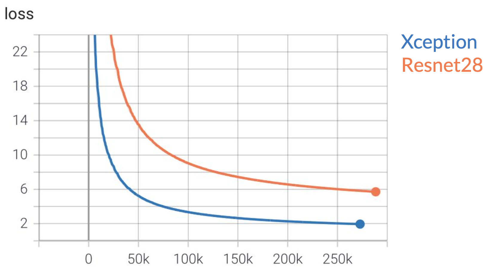

Aaron Guan, zhongg@andrew.cmu.edu
Yi Gu, yig2@andrew.cmu.edu
Wanzhi Zhang, wanzhiz@andrew.cmu.edu
Robotics Institute
Carnegie Mellon University
The next generation transportation system is one of the most important research topics to resolve problems such as traffic accidents, traffic congestion, and environmental degradation. Among the components of the system, autonomous vehicles (AVs) have been drawing increasing attention over the last decade from academia, industry, and government. In order for the AVs to plan good enough future trajectories, the self-driving car should make predictions of other agent's next movement, such as other vehicles, pedestrians, and etc. In this project, we designed a CNN regression pipeline to predict surrounding agent’s motion over 5 seconds given a historical 5 second bird-eyes-view images. ResNet28 [1] and XceptionNet41 [2] are used as the backbone and Negative Log Likelihood (NLL) is used as the loss function.
Dataset
In this project, we selected Lyft dataset [3] as our training dataset. The dataset is the largest collection of the traffic agent motion data. The dataset includes 1000+ hours of traffic agent movement, 16k miles of data from 23 vehicles and 15k semantic map annotations. The dataset consists of 170,000 scenes capturing the environment around the autonomous vehicle. Each scene encodes the state of the vehicle’s surroundings at a given point in time. One example of the agent and its history on the semantic map is shown in Figure 2.

Figure 2: Semantic map with agent cars and road lines
To process the dataset, we utilize the l5kit library, which is a python software library that can preprocess and visualize the lyft dataset. We extract the dataset from .zarr files, which has helped us split the dataset into training, validate and test set. In our project, we used training set to train our models and validate set to evaluate the models performance. The dataset contains 4 arrays, which are agents, frames, scenes, and traffic light faces. L5kit contains several dataset package that already implements pytorch-ready dataset. There are two kinds of dataset could be used: EgoDataset and AgentDataset. EgoDataset iterates over the AV annotations. AgentDataset iterates other agents annotations. Both of them can be iterated and return multi-channel images and future trajectories offsets from the rasterizer. In this project, our task is to predict surrounding agents motions, so we only used AgentDataset to train and evaluate our models. Other dataset package that we used is ChunkedDataset, which could help to make zarr dataset object.
Method
We used ResNet and Xception as the backbone. Considering our goal is to predict the surrounding agents motions of the autonomous vehicle over a 5-second-horizon given their 5 second historical positions and current position, we need 50 historical frames and 1 current frame, in which the distance of each two continuing frames are 0.1 second. Each frame contains the ego car and agents that are on different channels. So our input can be represented as an image with 3+(50+1) x 2=105 channels. Here the first 3 channels are the RGB map. Then we have 50 history time steps and one current time step. Every step is represented by two channels: (1) The mask representing the location of the current agent, and (2) the mask representing all other agents nearby. Because we want to output the next 5 second agents motions, we need 50 frames, which could be represented as 50 coordinates in two axes. Since, We only predict 1 trajectory, we set our output size as 50 x 2 = 100.
Our backbone uses ResNet and Xception followed by one fully-connected layer which takes an input image with C channels and predicts 1 trajectory. We used use negative log-likelihood (NLL) of the ground truth in the distribution defined by the prediction as our evaluation metric. Given the ground truth trajectory GT and K predicted trajectory hypotheses, we compute the likelihood of the ground truth trajectory under the mixture of Gaussians with the means equal to the predicted trajectories and the Identity matrix as a covariance. The likelihood is yielded as:
Therefore, the NLL loss can be computed as:
The above loss funcion is originally designed for multiple hypothesis, but in this project we only have one trajectory hypothesis as output with confidence score of 1. Therefore, we set k = 1 and c = 1 for the loss function.
Result
We resized the image as 224 x 224 and used the batch size of 32. SGD optimizer with learning rate of 0.001 is used to train the network. We used pytorch to implement the models. We did not have time to train all the models until convergence. Given the limited time and resources, we trained the models with 1 Tesla T4 GPU trained with ~280000 iterations for about 100h on AWS for each backbone. Figure 4 shows the training loss of both ResNet28 and XceptionNet41. As shown in the figure, the XceptionNet41 outperforms the ResNet28.
Frame # 209299: Ground Truth
Frame # 209299: ResNet Prediction
Frame # 209299: Xception Prediction
Frame # 891099: Ground Truth
Frame # 891099: ResNet Prediction
Frame # 891099: Xception Prediction
Frame # 157669: Ground Truth
Frame # 157669: ResNet Prediction
Frame # 157669: Xception Prediction
Frame # 695299: Ground Truth
Frame # 695299: ResNet Prediction
Frame # 695299: Xception Prediction
Conclusion
Presentation Video
Reference
-
Kaiming He, Xiangyu Zhang, Shaoqing Ren, and Jian Sun. Deep residual learning for image recognition, 2015.
-
Franc ̧ois Chollet. Xception: Deep learning with depthwise separable convolutions, 2017.
-
John Houston, Guido Zuidhof, Luca Bergamini, Yawei Ye, Long Chen, Ashesh Jain, Sammy Omari, Vladimir Iglovikov, and Peter Ondruska. One thousand and one hours: Self-driving motion prediction dataset, 2020.